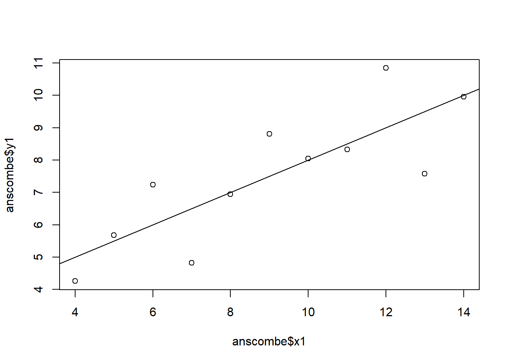
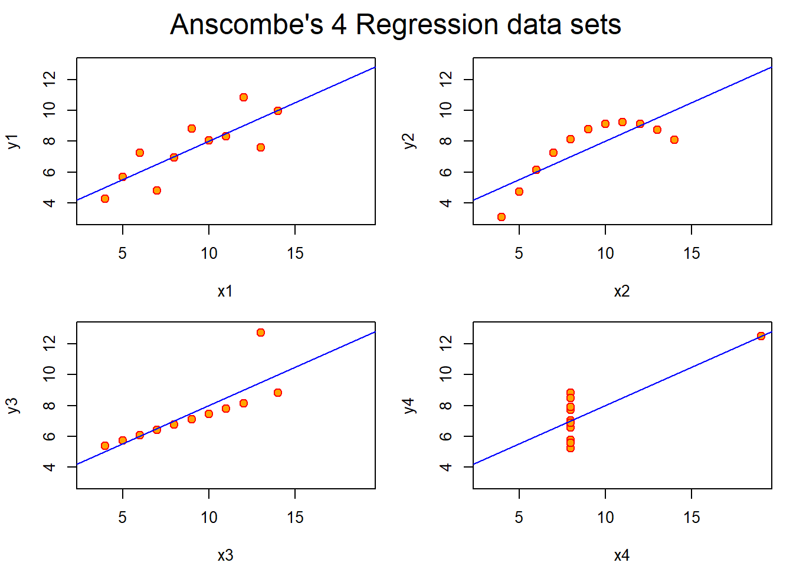

## Anscombe (1973) Quartlet
data(anscombe) # Load Anscombe's data
View(anscombe) # View the data
summary(anscombe) x1 x2 x3 x4 y1
Min. : 4.0 Min. : 4.0 Min. : 4.0 Min. : 8 Min. : 4.260
1st Qu.: 6.5 1st Qu.: 6.5 1st Qu.: 6.5 1st Qu.: 8 1st Qu.: 6.315
Median : 9.0 Median : 9.0 Median : 9.0 Median : 8 Median : 7.580
Mean : 9.0 Mean : 9.0 Mean : 9.0 Mean : 9 Mean : 7.501
3rd Qu.:11.5 3rd Qu.:11.5 3rd Qu.:11.5 3rd Qu.: 8 3rd Qu.: 8.570
Max. :14.0 Max. :14.0 Max. :14.0 Max. :19 Max. :10.840
y2 y3 y4
Min. :3.100 Min. : 5.39 Min. : 5.250
1st Qu.:6.695 1st Qu.: 6.25 1st Qu.: 6.170
Median :8.140 Median : 7.11 Median : 7.040
Mean :7.501 Mean : 7.50 Mean : 7.501
3rd Qu.:8.950 3rd Qu.: 7.98 3rd Qu.: 8.190
Max. :9.260 Max. :12.74 Max. :12.500 ## Simple version
plot(anscombe$x1,anscombe$y1)
summary(anscombe) x1 x2 x3 x4 y1
Min. : 4.0 Min. : 4.0 Min. : 4.0 Min. : 8 Min. : 4.260
1st Qu.: 6.5 1st Qu.: 6.5 1st Qu.: 6.5 1st Qu.: 8 1st Qu.: 6.315
Median : 9.0 Median : 9.0 Median : 9.0 Median : 8 Median : 7.580
Mean : 9.0 Mean : 9.0 Mean : 9.0 Mean : 9 Mean : 7.501
3rd Qu.:11.5 3rd Qu.:11.5 3rd Qu.:11.5 3rd Qu.: 8 3rd Qu.: 8.570
Max. :14.0 Max. :14.0 Max. :14.0 Max. :19 Max. :10.840
y2 y3 y4
Min. :3.100 Min. : 5.39 Min. : 5.250
1st Qu.:6.695 1st Qu.: 6.25 1st Qu.: 6.170
Median :8.140 Median : 7.11 Median : 7.040
Mean :7.501 Mean : 7.50 Mean : 7.501
3rd Qu.:8.950 3rd Qu.: 7.98 3rd Qu.: 8.190
Max. :9.260 Max. :12.74 Max. :12.500 # Create four model objects
lm1 <- lm(y1 ~ x1, data=anscombe)
summary(lm1)
Call:
lm(formula = y1 ~ x1, data = anscombe)
Residuals:
Min 1Q Median 3Q Max
-1.92127 -0.45577 -0.04136 0.70941 1.83882
Coefficients:
Estimate Std. Error t value Pr(>|t|)
(Intercept) 3.0001 1.1247 2.667 0.02573 *
x1 0.5001 0.1179 4.241 0.00217 **
---
Signif. codes: 0 '***' 0.001 '**' 0.01 '*' 0.05 '.' 0.1 ' ' 1
Residual standard error: 1.237 on 9 degrees of freedom
Multiple R-squared: 0.6665, Adjusted R-squared: 0.6295
F-statistic: 17.99 on 1 and 9 DF, p-value: 0.00217lm2 <- lm(y2 ~ x2, data=anscombe)
summary(lm2)
Call:
lm(formula = y2 ~ x2, data = anscombe)
Residuals:
Min 1Q Median 3Q Max
-1.9009 -0.7609 0.1291 0.9491 1.2691
Coefficients:
Estimate Std. Error t value Pr(>|t|)
(Intercept) 3.001 1.125 2.667 0.02576 *
x2 0.500 0.118 4.239 0.00218 **
---
Signif. codes: 0 '***' 0.001 '**' 0.01 '*' 0.05 '.' 0.1 ' ' 1
Residual standard error: 1.237 on 9 degrees of freedom
Multiple R-squared: 0.6662, Adjusted R-squared: 0.6292
F-statistic: 17.97 on 1 and 9 DF, p-value: 0.002179lm3 <- lm(y3 ~ x3, data=anscombe)
summary(lm3)
Call:
lm(formula = y3 ~ x3, data = anscombe)
Residuals:
Min 1Q Median 3Q Max
-1.1586 -0.6146 -0.2303 0.1540 3.2411
Coefficients:
Estimate Std. Error t value Pr(>|t|)
(Intercept) 3.0025 1.1245 2.670 0.02562 *
x3 0.4997 0.1179 4.239 0.00218 **
---
Signif. codes: 0 '***' 0.001 '**' 0.01 '*' 0.05 '.' 0.1 ' ' 1
Residual standard error: 1.236 on 9 degrees of freedom
Multiple R-squared: 0.6663, Adjusted R-squared: 0.6292
F-statistic: 17.97 on 1 and 9 DF, p-value: 0.002176lm4 <- lm(y4 ~ x4, data=anscombe)
summary(lm4)
Call:
lm(formula = y4 ~ x4, data = anscombe)
Residuals:
Min 1Q Median 3Q Max
-1.751 -0.831 0.000 0.809 1.839
Coefficients:
Estimate Std. Error t value Pr(>|t|)
(Intercept) 3.0017 1.1239 2.671 0.02559 *
x4 0.4999 0.1178 4.243 0.00216 **
---
Signif. codes: 0 '***' 0.001 '**' 0.01 '*' 0.05 '.' 0.1 ' ' 1
Residual standard error: 1.236 on 9 degrees of freedom
Multiple R-squared: 0.6667, Adjusted R-squared: 0.6297
F-statistic: 18 on 1 and 9 DF, p-value: 0.002165plot(anscombe$x1,anscombe$y1)
abline(coefficients(lm1))
plot(anscombe$x2,anscombe$y2)
abline(coefficients(lm2))
plot(anscombe$x3,anscombe$y3)
abline(coefficients(lm3))
plot(anscombe$x4,anscombe$y4)
abline(coefficients(lm4))
## Fancy version (per help file)
ff <- y ~ x
mods <- setNames(as.list(1:4), paste0("lm", 1:4))
# Plot using for loop
for(i in 1:4) {
ff[2:3] <- lapply(paste0(c("y","x"), i), as.name)
## or ff[[2]] <- as.name(paste0("y", i))
## ff[[3]] <- as.name(paste0("x", i))
mods[[i]] <- lmi <- lm(ff, data = anscombe)
print(anova(lmi))
}Analysis of Variance Table
Response: y1
Df Sum Sq Mean Sq F value Pr(>F)
x1 1 27.510 27.5100 17.99 0.00217 **
Residuals 9 13.763 1.5292
---
Signif. codes: 0 '***' 0.001 '**' 0.01 '*' 0.05 '.' 0.1 ' ' 1
Analysis of Variance Table
Response: y2
Df Sum Sq Mean Sq F value Pr(>F)
x2 1 27.500 27.5000 17.966 0.002179 **
Residuals 9 13.776 1.5307
---
Signif. codes: 0 '***' 0.001 '**' 0.01 '*' 0.05 '.' 0.1 ' ' 1
Analysis of Variance Table
Response: y3
Df Sum Sq Mean Sq F value Pr(>F)
x3 1 27.470 27.4700 17.972 0.002176 **
Residuals 9 13.756 1.5285
---
Signif. codes: 0 '***' 0.001 '**' 0.01 '*' 0.05 '.' 0.1 ' ' 1
Analysis of Variance Table
Response: y4
Df Sum Sq Mean Sq F value Pr(>F)
x4 1 27.490 27.4900 18.003 0.002165 **
Residuals 9 13.742 1.5269
---
Signif. codes: 0 '***' 0.001 '**' 0.01 '*' 0.05 '.' 0.1 ' ' 1sapply(mods, coef) # Note the use of this function lm1 lm2 lm3 lm4
(Intercept) 3.0000909 3.000909 3.0024545 3.0017273
x1 0.5000909 0.500000 0.4997273 0.4999091lapply(mods, function(fm) coef(summary(fm)))$lm1
Estimate Std. Error t value Pr(>|t|)
(Intercept) 3.0000909 1.1247468 2.667348 0.025734051
x1 0.5000909 0.1179055 4.241455 0.002169629
$lm2
Estimate Std. Error t value Pr(>|t|)
(Intercept) 3.000909 1.1253024 2.666758 0.025758941
x2 0.500000 0.1179637 4.238590 0.002178816
$lm3
Estimate Std. Error t value Pr(>|t|)
(Intercept) 3.0024545 1.1244812 2.670080 0.025619109
x3 0.4997273 0.1178777 4.239372 0.002176305
$lm4
Estimate Std. Error t value Pr(>|t|)
(Intercept) 3.0017273 1.1239211 2.670763 0.025590425
x4 0.4999091 0.1178189 4.243028 0.002164602# Preparing for the plots
op <- par(mfrow = c(2, 2), mar = 0.1+c(4,4,1,1), oma = c(0, 0, 2, 0))
# Plot charts using for loop
for(i in 1:4) {
ff[2:3] <- lapply(paste0(c("y","x"), i), as.name)
plot(ff, data = anscombe, col = "red", pch = 21, bg = "orange", cex = 1.2,
xlim = c(3, 19), ylim = c(3, 13))
abline(mods[[i]], col = "blue")
}
mtext("Anscombe's 4 Regression data sets", outer = TRUE, cex = 1.5)
par(op)